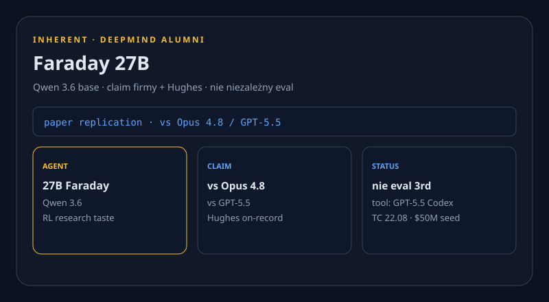

Nvidia +15% na serwery. Code 2.1.241. Faraday vs Opus.
Nowe vs 22.08: Bloomberg hike >15% (REPORTED), Code 2.1.240+241 (bugfix only), Faraday 27B, Guidelight, OpenAI SB 53 U-turn, MCP roadmap, Munder Difflin. X: 402. Reddit: 403. Dziura ≠ cisza. Niedziela cicha — nie pusta.

Nvidia: serwery AI drożeją o ponad 15%
REPORTED WAŻNE Bloomberg: najwięksi klienci dostali notice, że serwery z chipami AI zdrożeją w wielu przypadkach o ponad 15% — presja pamięci. Hike na systemy early-2027, w tym Vera Rubin i Grace Blackwell; dokładny lift zależy od generacji i RAM.
Contract manufacturers budujący serwery dla Microsoft, Google i Oracle przekazali notice — nienazwane źródła; Reuters nie zweryfikował niezależnie. Nvidia no comment.


Produkty i modele
Claude Code 2.1.241
NOWE Latest 2.1.241 23.08 00:52 UTC; dzień wcześniej 2.1.240 22.08 14:45 UTC. Oficjalny tekst obu tagów: „Bug fixes and reliability improvements.” Bez listy feature’ów — lab jej nie opublikował.
2.1.239 nie novum (wczorajszy floor). FACT: GitHub + CHANGELOG.md.
Grok 4.6 na GEAP
NOWE 21.08 (wczorajszy brief to przegapił): Grok 4.6 na Google Enterprise Agent Platform via Model Garden, Preview. 500k kontekstu; $2 / $0.50 cached / $6 za 1M tokenów.
To inny post niż „Grok Bot na więcej planów”. FACT x.ai + karta Google.
Laby i research
Inherent Faraday 27B
NOWE Londyński lab (alumni DeepMind, $50M seed) twierdzi, że agent Faraday 27B (baza Qwen 3.6) przebił Claude Opus 4.8 i GPT-5.5 w niezależnej replikacji paperów. Hughes on-record; niezależnego evalu nie ma.
Faraday używa GPT-5.5 Codex jako narzędzia (RL „research taste”, nie nowy frontier base); NanoGPT Speedrun self-reported: Fable 5 zamknął 81,7% luki do rekordu.
Guidelight containment
NOWE WAŻNE NGO Guidelight (Steven Adler, ex-OpenAI) ocenił publiczne plany containment: OpenAI 3/5 (pauzował workloady po incydentach); Anthropic i Meta najniżej. FACT raportu, nie plotka.
Google i OpenAI: scorecard pomija praktykę wewnętrzną. Meta nie potwierdziła, czy ma wewnętrzny plan. xAI nie zdążyło skomentować.
Biznes
OpenAI: wzmocnić SB 53
NOWE WAŻNE Po wcześniejszym sprzeciwie OpenAI prosi Kalifornię o wzmocnienie SB 53: monitoring frontier modeli w treningu/ewaluacji + cybersecurity w cyklu rozwoju. FACT LinkedIn Global Affairs (cytat TC).
U-turn polityczny, nie nowa ustawa. „Reverse federalism” bez prawa federalnego; kontekst incydentów na Hugging Face.
Chiny: AI vs mikrodramaty
NOWE CNN: SeeDance 2.0 i rywale opróżniają plan live-action w Hengdian — state media >120 tys. mikrodramatów w Q1 (95% AI), DataEye 220 tys. nowych AI na Douyin w H1.
Projekt 120 min ~¥15 000 vs >10× live; wrześniowa cenzura wymaga „poprawnego kierunku politycznego". FACT reporterów, nie lab drop.
Open-source / dev
MCP roadmap 22.08
NOWE Oficjalny blog: identity (DPoP/WIF), Tasks (SEP-2663), progressive discovery + jeden kontrakt tool-result. HN 192.
To protokół pod harnessy klonów, nie nowa apka.
Munder Difflin HN 270
NOWE Local-first harness: klony Claude Code / Codex / Grok z E2E chat. MIT node; Pro Cloud $39/mies.; Teams $149/seat.
Weekendowy produkt, nie toy Show HN — 270 pkt / 117 komentarzy.
openai/codex +1 544★
TREND Terminal coding agent, +1 544★ dziś (113 898★). Nie nowy repo — weekendowa prędkość „który agent w terminalu”.
mattpocock/skills
TREND Wciąż #2 daily (+2 683★). Wczorajszy item, bez nowej substancji — nie NOWE.
Narzędzia
Open Analytics 224▲
NOWE Sobota PH #2: AI-native zamiennik Google Analytics. Niedziela PH cicha — bez AI launchu z ruchem.
MCP + klony
NOWE Roadmap MCP (identity, Tasks, discovery) to warstwa pod Munder. Oficjalne 22.08, nie recap.
Gadżety
MemoMind One ~$1,2 mln
TREND Kickstarter XGIMI: okulary HUD bez kamery, ~$399 vs $599 MSRP. Tracker ~$1,2 mln / ~2 470 backerów; zamyka się 27.08. CROWDFUNDING, nie shipping — bez material update vs 22.08, nie NOWE. Versa halt i patent Meta nie są dziś nowością.
Sygnały X + Reddit + HN
X HOLE user-X @ProductRootIO. get_users_me 200, potem pierwsze search_news 402 credits depleted. search_posts_all nigdy. Bez scrapu Chrome. Dziura ≠ cisza — brak itemów X to dziura danych, nie „cichy weekend na X”.
REDDIT HOLE r/LocalLLaMA, r/ClaudeAI, r/OpenAI: 403. Nie wymyślamy wątków.
HN: local LLM dumber 257 · ElevenLabs joke 352 · Munder 270 · MCP 192. Komentarze = community, nie fakty.
Co warto dziś sprawdzić
- Nvidia hike >15% (REPORTED). Bloomberg · CNBC
- Code 2.1.241 (bugfix only; 2.1.239 nie novum). v2.1.241
- Faraday 27B vs Opus/GPT — claim firmy. TC Faraday
- Guidelight 3/5 + OpenAI SB 53 U-turn. Guidelight · SB 53
- Grok 4.6 GEAP $2/$0.50/$6. x.ai
- MCP roadmap + Munder HN 270. MCP · Munder
- MemoMind zamyka 27.08 (TREND). Kickstarter
3 tweets ready to post
https://www.bloomberg.com/news/articles/2026-08-22/nvidia-customers-notified-about-ai-related-price-hikes-above-15
https://github.com/anthropics/claude-code/releases/tag/v2.1.241
https://techcrunch.com/2026/08/22/inherent-founded-by-deepmind-alumni-says-its-ai-teammate-just-outperformed-anthropic-and-openai-at-replicating-research/